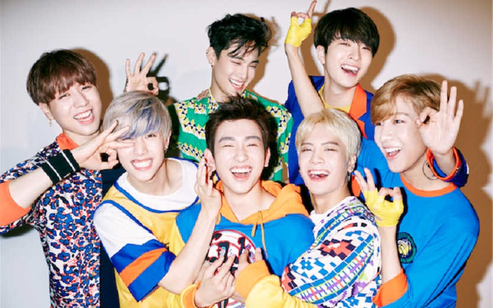
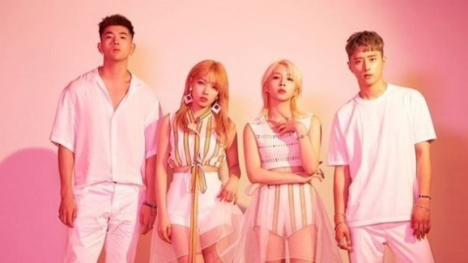
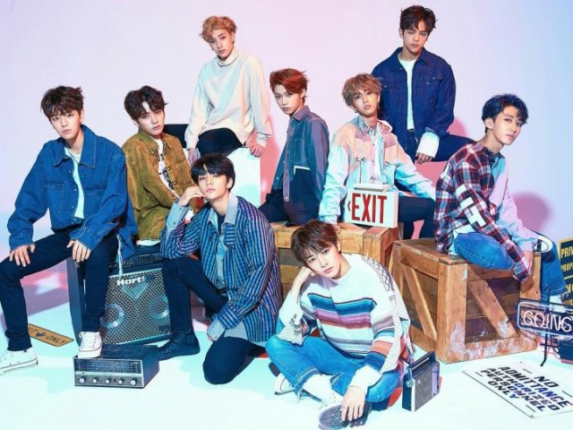

Grupos favoritas
Bom, eu sou uma pessoa bem eclética, ou seja, gosto de eclético de vários estilos de músicas (com exceção de funk, mas super respeito quem gosta).
Aqui vou listar algumas bandas, grupos e solos que eu gosto bastante.
Bom, acho que muita gente já vai me julgar mas galerinha respeito!
BTS
Conhecendo o grupo:
BTS, também conhecido como Bangtan Boys, é um grupo sul-coreano estreado pela Big Hit Entertainment em 2013. Esse grupo tipicamente k-pop, é composto por sete membros: Jin, Suga, J-Hope, RM, Jimin, V e Jungkook.
BTS realizou sua estreia oficial em 13 de junho de 2013 com o lançamento do single "No More Dream" do álbum 2 Cool 4 Skool. O grupo ganhou os prêmios de "Novo Artista do Ano" em três das premiações de maior destaque da indústria musical sul-coreana: Melon Music Awards, Golden Disc Awards e Seoul Music Awards.
Gostou? Que tal ouvir um pouco?
GOT7
Conhecendo o grupo:
Got7 é um grupo masculino sul-coreano formado pela JYP Entertainment em 2014. Composto por sete membros, dois dos quais já haviam estreado anteriormente na dupla JJ Project em 2012, o grupo é formado por sete integrantes: Mark, JB, Jackson, Jinyoung, Youngjae, BamBam e Yugyeom.
A primeira musica do GOT7 foi "Girls Girls Girls", E Seu primeiro álbum "Identify". Sua primeira musica e album foram lançados em 2014. O Grupo também debutou em 16 de janeiro de 2014.
A primeira musica do GOT7 foi "Girls Girls Girls", E Seu primeiro álbum "Identify". Sua primeira musica e album foram lançados em 2014. O Grupo também debutou em 16 de janeiro de 2014.
O grupo foi introduzido ao público através de um episódio do reality show da Mnet Who is Next: WIN, que foi transmitido em 6 de setembro de 2013. No episódio, quatro membros competiram contra os trainees da YG Entertainment: Team A (agora conhecido como WINNER) e Team B (agora conhecido como iKON). Em 16 de janeiro de 2014, GOT7 realizou sua estreia oficial com o lançamento do single "Girls Girls Girls".[1] Seu álbum de estreia, Got It? ficou em segundo no Gaon Album Chart e em primeiro no World Albums Charts da Billboard.
Gostou? Que tal ouvir um pouco?
KARD
Conhecendo o grupo:
Kard é um grupo misto sul-coreano formado pela DSP Media em 2016. Ele é composto por quatro integrantes: J.Seph, B.M, Somin e Jiwoo
De 2012 a 2014, a integrante Somin fez parte do grupo japonês Puretty, da DSP Media, onde lançaram o single "Cheki ☆ Love" em 2012 e "Shuwa Shuwa BABY" em 2013. Depois de dois anos o grupo se separou em 2014. No mesmo ano ela entrou no programa Kara Project, no qual sete traines competiam para se tornar a nova integrante do grupo Kara. Somin terminou em segundo lugar. Em 24 de agosto de 2015, Somin estreou como líder do novo grupo feminino da DSP Media chamado April.Ela anunciou sua saída em novembro do mesmo ano.
Em agosto de 2015, o membro BM participou da música "La La La" da cantora Hara em seu extended play de estreia Alohara (Can You Feel It?) e estrelou como seu parceiro de dança o videoclipe e performances da faixa-título "Choco Chip Cookies".
Gostou? Que tal ouvir um pouco?
Stray Kids
Conhecendo o grupo:
Stray Kids é um grupo masculino sul-coreano formado pela JYP Entertainment. É composto por Chan, Woojin, Lee Know, Changbin, Seungmin, HAN, Felix, I.N e Hyunjin. O grupo teve o seu debut oficial no dia 25 de março de 2018 com o seu showcase oficial e o lançamento do seu álbum "I am NOT" e a música título “District 9” no dia 26. No dia 1° de agosto de 2018 foi anunciado que o nome do fandom seria "Stay”.
Em setembro de 2017, a JYP Entertainment anunciou oficialmente o novo reality show da agência para lançar um projeto de debut de ídolos masculinos com o conceito “Trainees que sonham em debutar VS JYP”. Mais detalhes e informações foram lançados nos próximos dois meses, incluindo o título do programa - Stray Kids. Uma das informações que mais chamou atenção sobre o programa foi a de que os trainees não apresentariam covers de outros artistas em suas missões, e sim criariam as próprias músicas e coreografias. No dia 26 de setembro, foi lançado o primeiro teaser do programa, aumentando a sua antecipação.
Antes da estreia do programa, no dia 6 de outubro, a JYP lançou o primeiro MV do grupo. A música era intitulada "Hellevator" e mais tarde foi lançada como single digital. Já no segundo episódio do programa, seria revelado que a música era uma das missões que eles deveriam completar. Nos dias 11, 12 e 13 de outubro foram lançados os teasers individuais dos membros e o programa estreou no dia 17.
Episódios 5 e 8, Minho e Felix foram respectivamente eliminados. Apesar disso, no último episódio, que foi transmitido ao vivo no dia 19 de dezembro, Park Jinyoung deu uma última chance de retorno ao grupo aos dois trainees, que seria decidida por meio de uma votação. O resultado foi de 96% para a permanência dos dois no grupo contra 4% que votou contra. Sendo assim, a formação final do grupo permaneceu a mesma do começo, com nove membros.
Gostou? Que tal ouvir um pouco?
Astro
Conhecendo o grupo:

Astro é um grupo masculino sul-coreano formado pela Fantagio Entert em 2016. É composto por seis integrantes: MJ, JinJin, EunWoo, Moon Bin, Rocky e SanHa. O grupo estrelou em 18 de agosto de 2015, uma série sul-coreana chamada To Be Continued. A estreia musical do grupo aconteceu em 22 de fevereiro de 2016, com o single "Hide & Seek" do mini álbum Spring Up!.
O grupo nasceu do projeto i-Teen, um projeto da Fantagio para recrutar novos talentos e que permite que o público acompanhe os progressos dos trainees da gravadora. Em 14 de agosto de 2015, a empresa anunciou a nova série que contaria com a participação dos integrantes, denominada To Be Continued, junto com o perfil dos membros. A série também conta com a participação de Seo Kang Joon do grupo 5urprise, Yeoreum do grupo Hello Venus e algumas integrantes do grupo Weki Meki (Trainees na época) como figurantes, ambos os três grupos formados pela Fantagio.
Em 21 de janeiro de 2016, o grupo estrelou o próprio reality show, intitulado "Astro Ok! Ready", mostrando um pouco da intimidade do grupo.